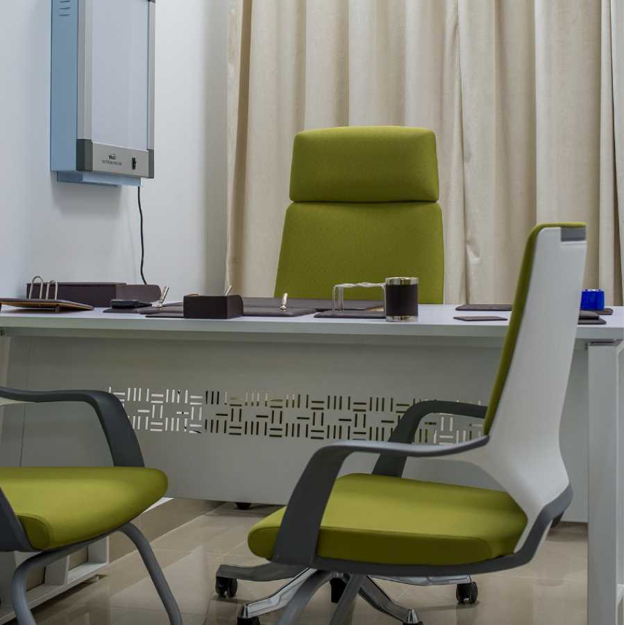

احجز الآن مع دكتور محمود الجيزاوي لكل الامراض
احجز اونلاين او كلم ١٦٦٧٦
١٥٠٠٠ دكتور -٩٠٠٠ استاذ واستشاري - اكثر من ٤٠ تخصص
معلومات عن الدكتور
استشاري المخ والاعصاب بمستشفيات الشرطة دكتوراه الأمراض العصبيه و النفسيه ماجستير امراض المخ والاعصاب والطب النفسي فريق متخصص لعلاج خشونه الركبه بدون جراحه بواسطه حقن الهيالويورونك اسيد ( الماده الزيتيه طويله المفعول ) و حقن البلازما الغنيه بالصفائح الدمويه فريق متخصص لعلاج الام العمود الفقرى بدون جراحه فريق متخصص لعلاج التهاب الاعصاب بواسطه التردد الحرارى.
صور العيادة :

تقييم المرضي :
التقييم العام
من ١٢٩٧ زاروا الدكتور
التقييم العام
التقييم العام
التقييم العام
دكتور احمد رفيق
١٥٤,٨٤٢ مشاهدة
استشاري و دكتوراه امراض المخ والاعصاب والعمودالفقري و علاج آلام المفاصل بمستشفيات الشرطةدكتور مخ واعصاب متخصص في نفسي بالغين، مخ واعصاب اطفال و مخ واعصاب بالغين
التقييم العام من ١٢٩٩ زاروا الدكتور اظهر التقييمات
التقييم العام
'دكتور بشوش وتشخيص مظبوط والحاله خافت' Baraa m. ٣٠ سنة الأحد، ٦ فبراير ٢٠٢٢ ٠٢:١٠ م
تقييم الدكتور
التقييم العام
'دكتور بشوش وتشخيص مظبوط والحاله خافت' Baraa m. ٣٠ سنة الأحد، ٦ فبراير ٢٠٢٢ ٠٢:١٠ م
تقييم الدكتور
التقييم العام
'دكتور بشوش وتشخيص مظبوط والحاله خافت' Baraa m. ٣٠ سنة الأحد، ٦ فبراير ٢٠٢٢ ٠٢:١٠ م
تقييم الدكتور
| معلومات الحجز |
|---|